Releasenotes eBlinqx Hypotheekadvies – Juni 2025
Onderstaande updates hebben wij in de maand juni doorgevoerd:
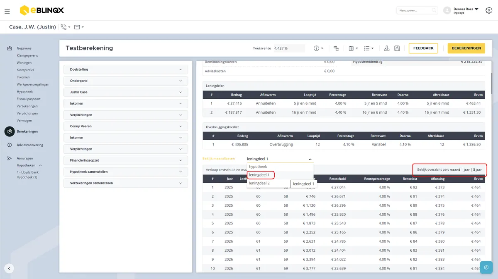
🎉 IT-26821: Gelijke weergave maandlasten bij leningdelen in financieringsopzet
Waar je eerder alleen bij de totale hypotheek kon schakelen tussen een weergave per maand, per jaar of per 5 jaar, bieden we deze drie overzichtsopties nu ook op leningdeelniveau aan. Daarmee krijg je als adviseur of consument bij elk individueel leningdeel hetzelfde detailniveau en dezelfde analysemogelijkheden als bij het totaaloverzicht. Hierdoor heb je nu meer inzicht, meer controle en een uniformere beleving bij het vergelijken en uitleggen van de lasten van afzonderlijke leningdelen.
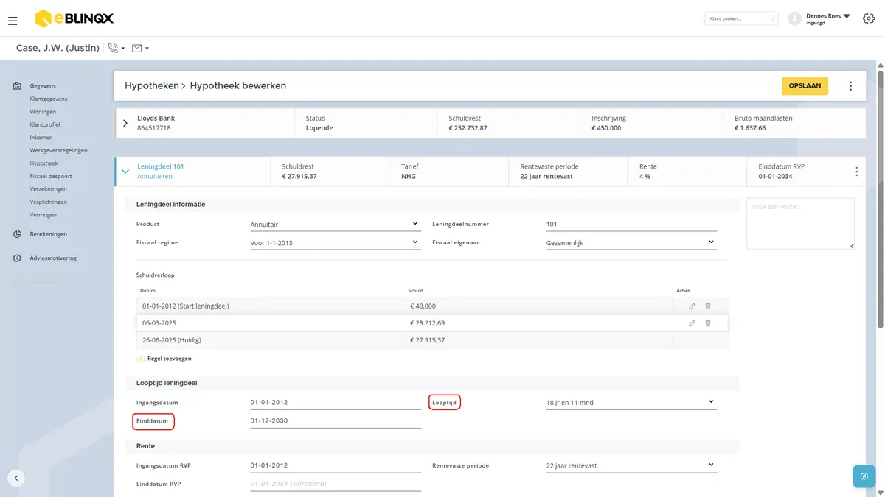
🎉 IT-26949: Looptijd leningdeel, start- en einddatum nu perfect op elkaar afgestemd
Goed nieuws! De velden looptijd, startdatum en einddatum in het hypotheekformulier werken vanaf nu vlekkeloos samen. Zo wordt het invullen niet alleen makkelijker, maar ook een stuk betrouwbaarder. Wanneer je de looptijd aanpast, wordt automatisch de juiste einddatum ingevuld. Pas je de einddatum aan, dan berekenen we direct de correcte looptijd. Je hoeft niet meer zelf te rekenen of alles nog klopt – de velden blijven altijd automatisch in sync. Dat scheelt tijd, voorkomt fouten en zorgt voor een soepelere gebruikerservaring. Met deze verbetering zetten we weer een mooie stap richting een nóg slimmer en gebruiksvriendelijker eBlinqx Hypotheekadvies!
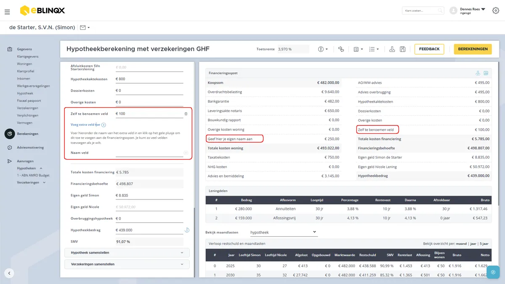
🎉 IT-26940: Zelf te benoemen velden in de financieringsopzet
Op veler verzoek hebben we een krachtige nieuwe functionaliteit toegevoegd: vanaf nu is het mogelijk om dynamische (vrije) velden toe te voegen aan de financieringsopzet! Adviseurs kunnen nu zélf – per kantoor én per berekening – extra velden toevoegen bij zowel de kosten voor de woning als de kosten voor de financiering. Deze velden:
-
Zijn volledig vrij in te vullen, te hernoemen en te verwijderen
-
Worden automatisch meegenomen in het rapport én in de weergave van de financieringsopzet (ook bij draagplichtconstructies)
-
Tellen netjes mee in de totaalbedragen ‘Totale kosten woning’ en ‘Totale kosten financiering’
💡 Waarom is dit handig?
Elk kantoor werkt nét even anders. Met deze uitbreiding speel je soepel in op specifieke werkwijzen, zonder vast te zitten aan een generieke lijst in de instellingen. Volledige flexibiliteit dus!
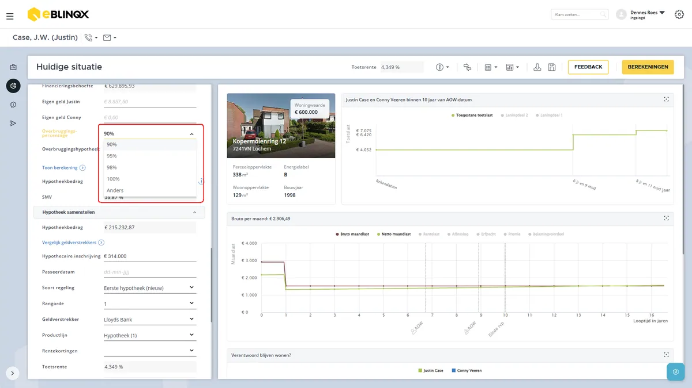
🎉 IT-26376: Verbeterde berekening overbruggingshypotheek bij niet-verkocht onderpand
De berekening van de maximale overbruggingshypotheek bij een niet-verkocht onderpand is aangepast om beter aan te sluiten bij de werkwijze van geldverstrekkers én de praktijk van de adviseur. Adviseurs kunnen nu in eBlinqx Hypotheekadvies zelf het verkooppercentage selecteren via een dropdownmenu. Keuzes: 90% (default), 95%, 98% en Anders (vrije invoer met standaardwaarde 90%)
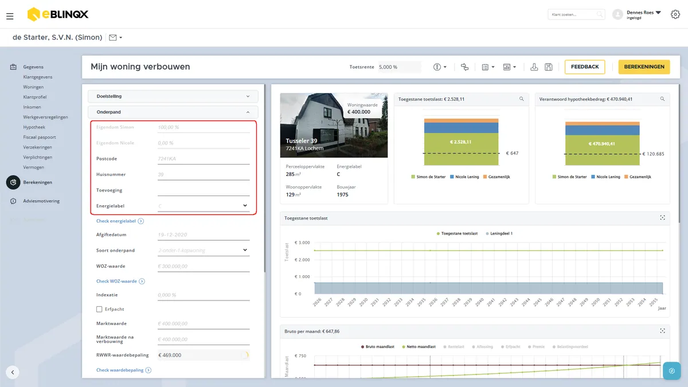
IT-26925: Volledige prefill van onderpandgegevens in HDN-aanvragen
Vanaf nu wordt het nóg makkelijker om HDN-aanvragen foutloos en efficiënt te versturen! Met deze update worden automatisch ingevulde onderpandgegevens voortaan ook meegenomen in de sectie Onderpand | Erfpacht. Dit geldt bijvoorbeeld bij het doel ‘Mijn woning verbouwen’, waarbij gegevens al geprefilled zijn in eBlinqx Hypotheekadvies.
🔹 Wat kun je verwachten?
-
Volledig ingevulde HDN-aanvragen zonder extra handmatig werk
-
Slimme prefill van onderpandgegevens in alle relevante secties
-
Een nóg soepelere ervaring bij het indienen van dossiers
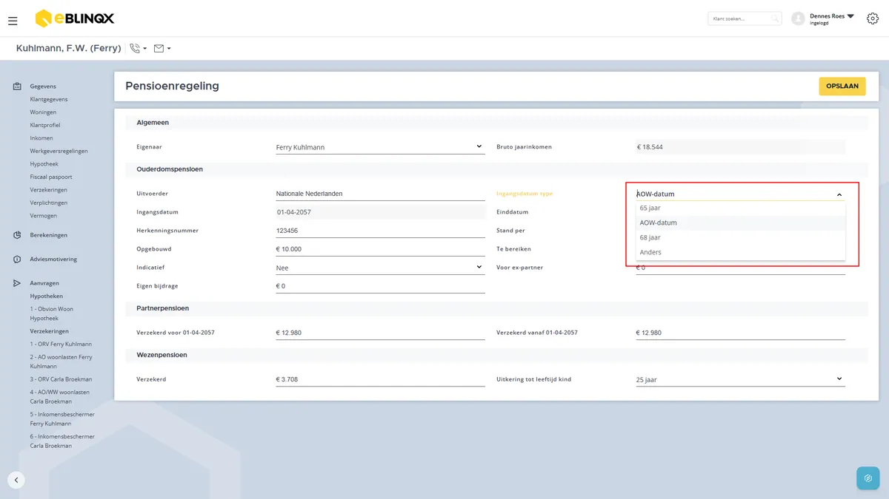
📅 IT-26928 | Directe weergave ingangsdatum bij pensioenkeuze
Bij het toevoegen van een ouderdomspensioenregeling wordt de ingangsdatum nu meteen aangepast zodra je een andere optie kiest in het dropdownmenu (zoals “65 jaar” of “68 jaar”). Dit zorgt voor directe visuele terugkoppeling en voorkomt verwarring. Zo zie je meteen welk effect je keuze heeft – nog vóór je op opslaan klikt.
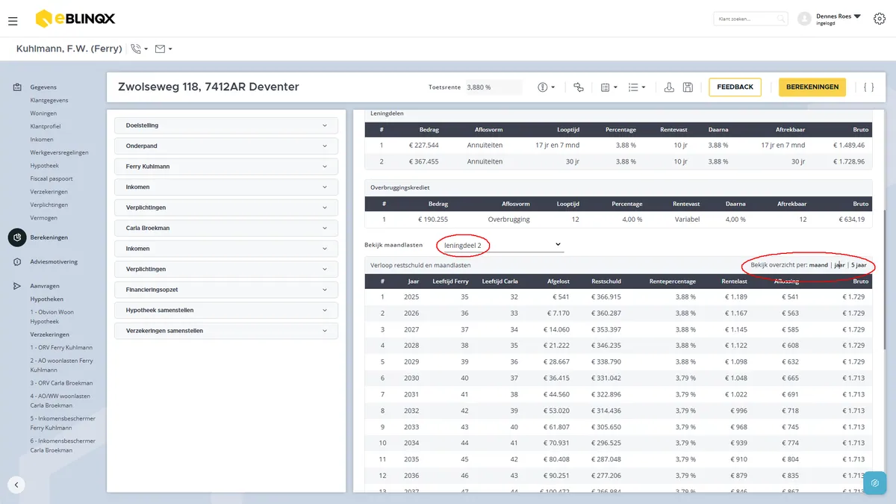
📊 IT-26821 | Eenduidige weergave maandlasten per leningdeel
Vanaf nu zijn in de financieringsopzet van zowel Fastlane Oriëntatie als Advies de maandlasten per leningdeel op drie niveaus te bekijken: per maand, per jaar én per 5 jaar. Hiermee is de weergave van maandlasten bij leningdelen gelijkgetrokken met die van de totale hypotheek — voor meer inzicht en consistentie in het adviesproces.
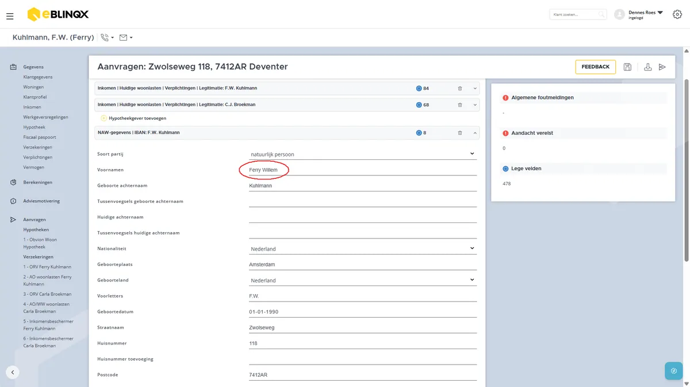
🔄 IT-26922 | Automatische overname voornamen legitimatiegegevens
Vanaf deze release worden de voornamen van aanvrager en partner automatisch gesynchroniseerd vanuit de klantgegevens naar de legitimatievelden in de HDN-aanvraagmodule. Dit voorkomt dubbele invoer, vermindert de kans op fouten en draagt bij aan een efficiënter adviesproces.
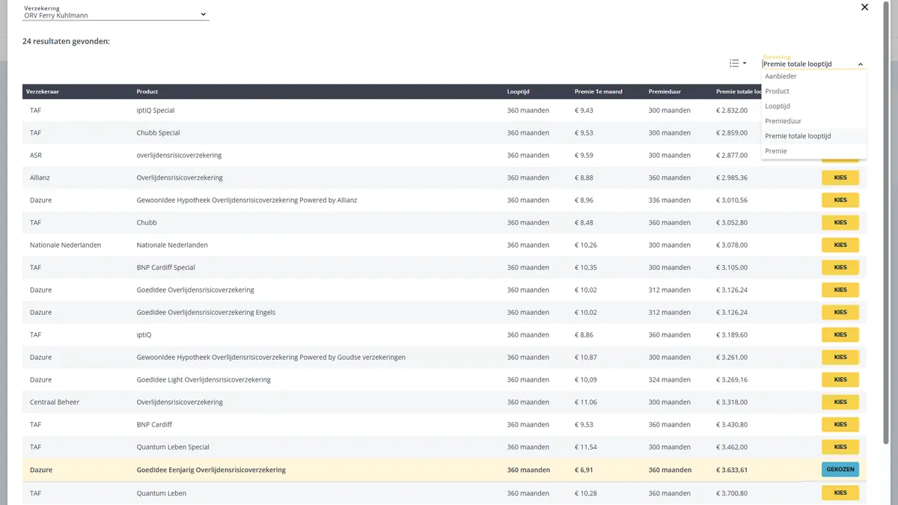
💡 IT-26749 – Selecteerbare aanbieders in lijstweergave
In de lijstweergave van vergelijkingen is het nu mogelijk om gericht aanbieders te selecteren – net als in de tabelweergave. Voordeel voor de adviseur: Meer controle en consistentie bij het vergelijken van geldverstrekkers en verzekeraars, ongeacht de gekozen weergave.
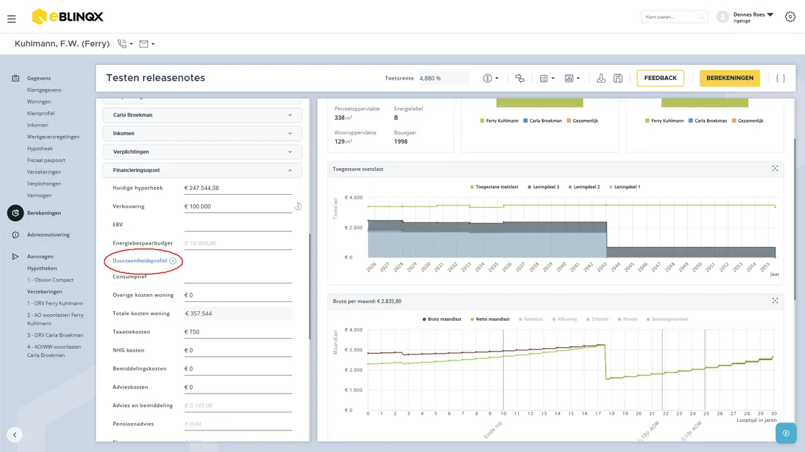
🔧 IT-26801 – Verbeterde interactie bij duurzaamheidsprofiel
De link naar het duurzaamheidsprofiel en alle overige links zijn nu volledig klikbaar, inclusief het driehoekje ernaast. Dit zorgt voor een soepelere gebruikerservaring en voorkomt verwarring. Daarnaast zijn alle links in dit blok nu consistent onderlijnd bij mouse-over, wat de navigatie duidelijker en intuïtiever maakt.
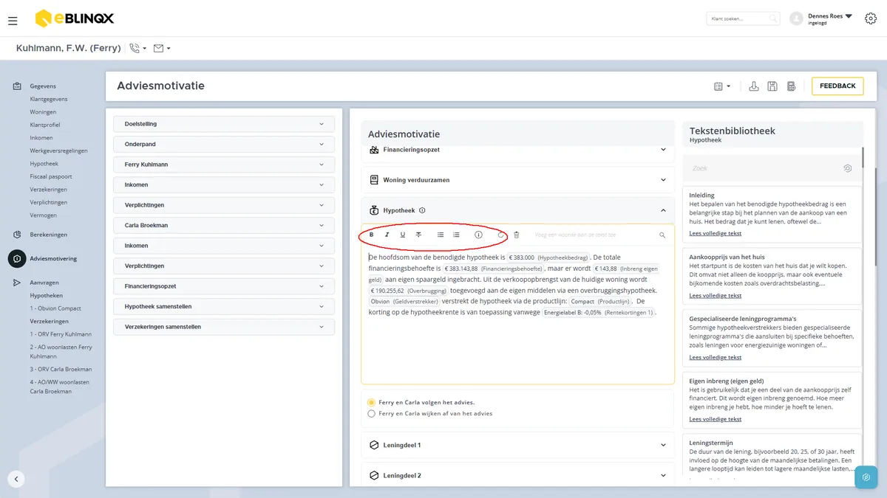
🔧 IT-26924 – Rich Text Editor
De iconen in de rich text editor worden nu weer correct weergegeven. Dankzij deze hotfix werkt de opmaakfunctie in tekstvelden weer intuïtief en overzichtelijk, wat het schrijven van adviesmotieven en toelichtingen gemakkelijker maakt.
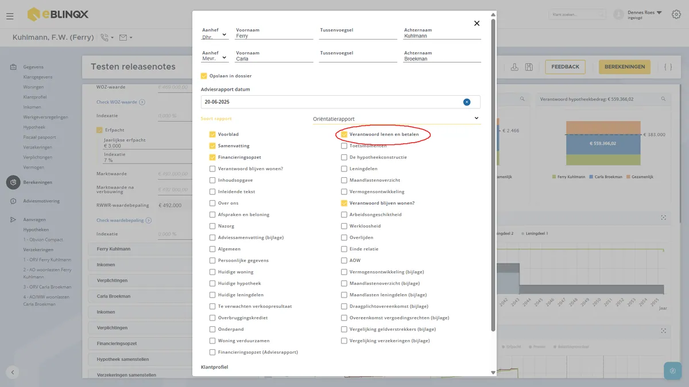
💡 IT-26860 – Verbeterde structuur in het Oriëntatierapport
Het sjabloon van het Oriëntatierapport is aangepast voor alle tenants. De nieuwe opbouw bevat nu een extra hoofdstuk: ‘Verantwoord lenen en betalen’. Deze toevoeging biedt meer ruimte om de betaalbaarheid van de hypotheek helder en gestructureerd toe te lichten, wat zorgt voor een vollediger en overtuigender (maximale hypotheek) rapport richting de klant.
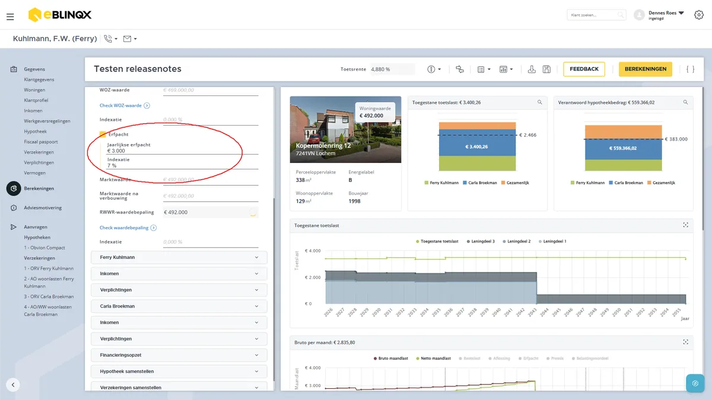
🔧 IT-24538: Verbeterde stabiliteit bij erfpachtregistratie
Vanaf deze release wordt de ingevoerde erfpachtinformatie netjes vastgehouden in de berekening. Dit voorkomt dat gegevens verdwijnen na het opslaan, waardoor de adviseur zeker weet dat alle onderpandgegevens correct en volledig blijven geregistreerd. Een stap vooruit in betrouwbaarheid en gebruikersgemak!
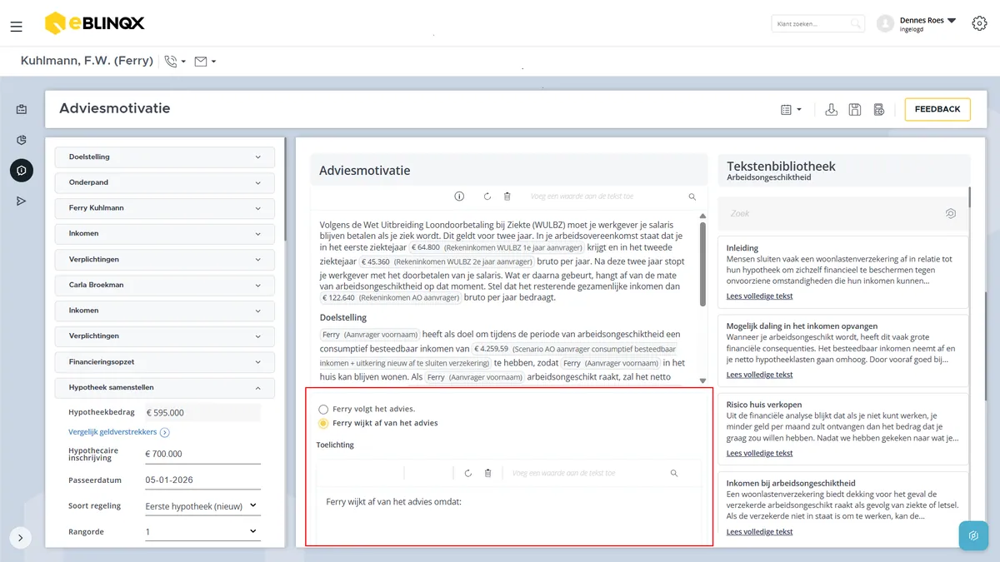
🎉 IT-26285 – Keuze klant & motivatie bij afwijking van advies nu live!
Met trots introduceren we een belangrijke verbetering in eBlinqx Hypotheekadvies die de professionaliteit en transparantie van het adviesrapport versterkt: de implementatie van de keuzeverklaring klant én verplichte motivatie bij afwijking van advies. Vanaf nu kan de adviseur bij ieder relevant adviesonderdeel expliciet aangeven of de klant het advies volgt, of bewust afwijkt:
✅ [_] Klant volgt het advies
❌ [_] Klant wijkt af van advies
→ hierbij verschijnt automatisch een verplicht tekstveld.
📌 Functionaliteiten:
De adviseur kan bij afwijking zelf een motivatie schrijven of kiezen uit een lijst van standaardteksten.
De teksten zijn slim gekoppeld aan het juiste hoofdstuk van het adviesrapport.
De gemaakte keuze én motivatie worden automatisch opgenomen in het uiteindelijke rapport (PDF).
💡 Waarom dit belangrijk is:
Deze toevoeging ondersteunt het actieve klantbelang, zoals bedoeld in de richtlijnen van passend adviseren. Bovendien borgt het compliance en transparantie richting klant én toezichthouder.
📘 Dit is een volgende stap in het verder professionaliseren van het adviesproces. Veel succes met adviseren! 🚀
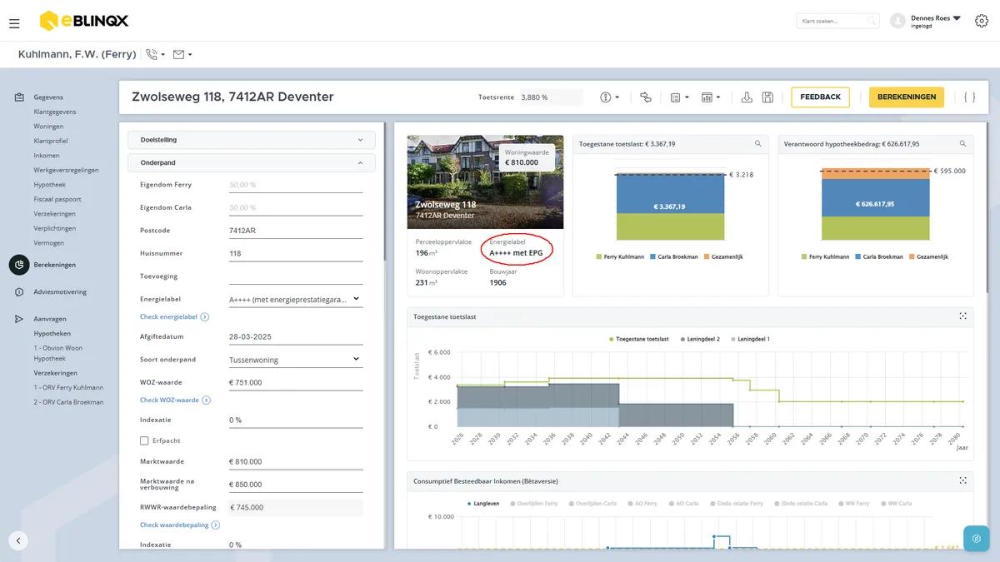
🔔 IT-26818: Vertaling energielabels bij onderpandfoto’s
In deze release is een mooie verbetering doorgevoerd in de presentatie van de energielabels bij onderpandfoto’s in eBlinqx Hypotheekadvies. De Engelse benamingen die voorheen onder de woningfoto verschenen, zijn nu netjes vertaald naar het Nederlands. Zo zorgen we voor meer duidelijkheid voor zowel adviseurs als klanten. De volgende Engelse energielabel-termen worden nu automatisch correct vertaald in de adviesapplicatie én het adviesrapport:
"Non" ➝ "Niet bekend"
"Invalid" ➝ "Niet geldig"
"A++++_WITH_ENERGY_PERFORMANCE_GUARANTY" ➝ "A++++ met EPG"
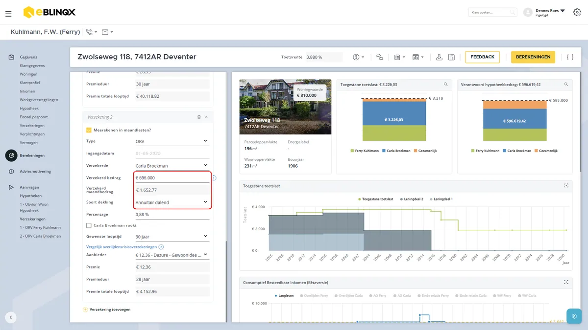
🔔 IT-26827: Nieuw in eBlinqx Hypotheekadvies: Heldere keuze bij overlijdensrisicodekking via CBI!
Met trots introduceren we een verbetering binnen het overlijdensrisicoadvies op basis van het Consumptief Besteedbaar Inkomen (CBI)!
Fastlane biedt standaard een lineaire overlijdensrisicodekking aan waarbij de werkelijke netto inkomensterugval per maand voor de langstlevende wordt berekend. Deze benadering kan in sommige situaties leiden tot een verzekerd bedrag dat (veel) hoger uitvalt dan het aangevraagde hypotheekbedrag. Wanneer de klant ervoor kiest om enkel de resterende hypotheekschuld te verzekeren, kan de adviseur de dekking eenvoudig aanpassen van lineair naar annuïtair of gelijkblijvend. eBlinqx Hypotheekadvies toont dan direct het bijbehorende maandbedrag dat op basis van de gekozen looptijd met de verzekeringsuitkering kan worden gerealiseerd.
Op deze manier biedt eBlinqx Hypotheekadvies nu direct inzicht in twee concrete opties voor de langstlevende: het aflossen van de resterende hypotheekschuld met de uitkering óf het maandelijks aanvullen van het inkomen.
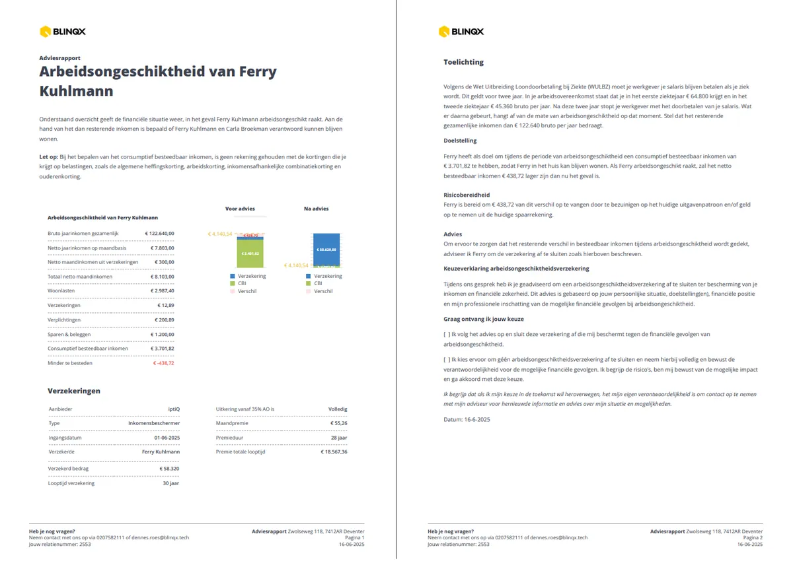
🔔 IT-26825: Inkomensbeschermer in adviesrapport
In het adviesrapport wordt vanaf nu onder het onderdeel ‘Arbeidsongeschiktheid’ weergegeven welke AO-verzekeringen zijn geadviseerd. Indien de adviseur zowel een AO-woonlastenbeschermer als een AO-inkomensbeschermer opneemt in het advies, worden beide verzekeringen weergegeven. Wordt slechts één van beide geadviseerd, dan tonen we uitsluitend die specifieke dekking. Met deze uitbreiding bieden we meer transparantie en volledigheid in het adviesrapport richting de klant.
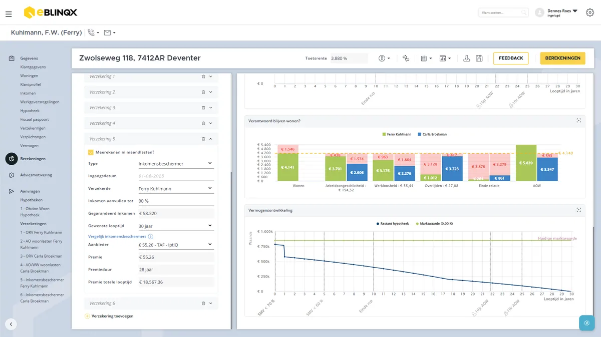
🔔 IT-26824: Totaalpremie AO-dekkingen zichtbaar
Vanaf nu tonen we in de verdiepende schermen onder het thema ‘Arbeidsongeschiktheid’ de totale premie van de geadviseerde AO-dekkingen: Woonlastenbeschermer en de Inkomensbeschermer. De bijbehorende premies worden bij elkaar opgeteld en als totaalbedrag weergegeven in het scherm. Verwijdert de adviseur één van beide dekkingen via het prullenbakicoon, dan wordt automatisch alleen de premie van de overgebleven dekking getoond. Deze toevoeging biedt een duidelijker beeld van de totale kosten van arbeidsongeschiktheidsverzekeringen binnen het advies.
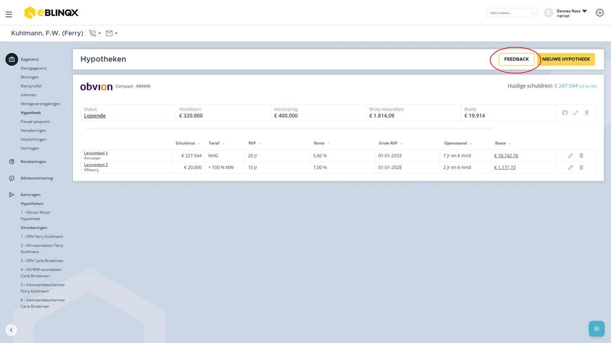
🔔 IT-26482: Feedbackknop nu ook beschikbaar bij Inventarisatie
De feedbackknop was tot voor kort alleen beschikbaar binnen de sectie ‘Berekeningen’ van Fastlane Oriëntatie en Advies. Op verzoek van gebruikers is de knop nu ook toegevoegd aan het onderdeel Inventarisatie. Dankzij deze uitbreiding kunnen gebruikers voortaan vanuit elk onderdeel van eBlinqx Hypotheekadvies eenvoudig feedback geven. Dit verbetert de gebruikservaring en maakt het mogelijk om sneller te reageren op signalen uit de praktijk.
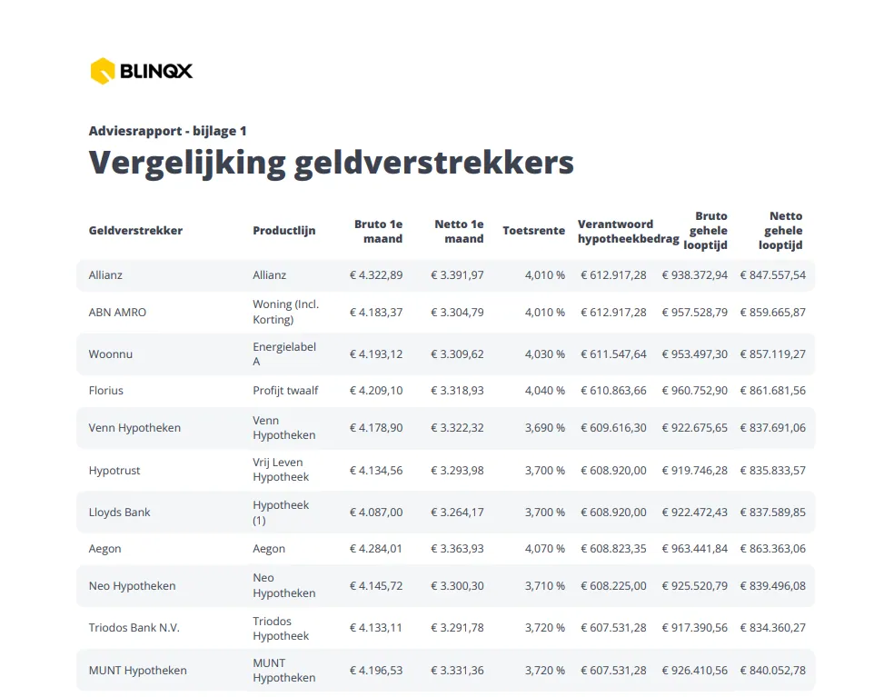
🔔 IT-25390: Verbeterde sortering en layout aanbiedersvergelijking
De volgorde van de aanbieders in het adviesrapport volgt nu exact de sortering die de adviseur zelf kiest in de applicatie – bijvoorbeeld op basis van de maximale hypotheek (GHF). Dit maakt het vergelijken van aanbieders eenvoudiger en sluit perfect aan op de advieslogica. Voordelen voor jou als adviseur:
Je gekozen sortering wordt 1-op-1 overgenomen in het rapport
De vergelijking is direct logisch en navolgbaar voor je klant
Strakke opmaak zorgt voor een professionele uitstraling
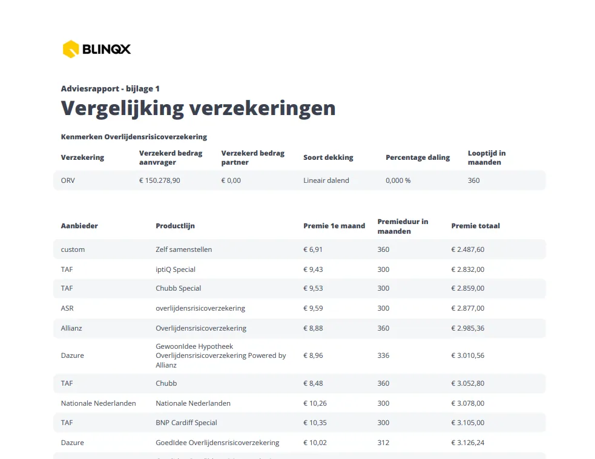
🔔 IT-25381: Verbeterde weergave bijlage ‘Vergelijking verzekeringen’
De bijlage ‘Vergelijking verzekeringen’ in het adviesrapport heeft een mooie upgrade gekregen! 🎉
Maatschappijen zonder premie worden nu automatisch onderaan weergegeven. Hierdoor beginnen de vergelijkingen met de meest relevante aanbieders mét premie — wel zo overzichtelijk voor adviseur én klant.
Daarnaast is de opmaak strakker en gebruiksvriendelijker, met extra aandacht voor de uitlijning van kolommen zoals ‘Premie eerste maand’ en ‘Productlijn’.
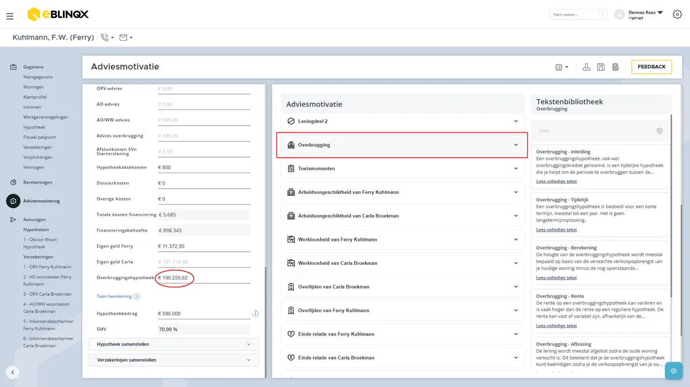
🔔 IT-26720: Adviesmotivatie nu nóg slimmer en relevanter
De adviesmotivatievelden zijn vanaf nu dynamischer opgebouwd! Wanneer er geen overbruggingshypotheek in de berekening voorkomt, wordt het hoofdstuk ‘Overbrugging’ automatisch weggelaten uit de adviesmotivatie. Alleen wanneer het relevant is, verschijnt dit onderdeel — met de juiste toelichting. Je adviesmotivatie bevat alleen toepasselijke informatie. Minder overbodige tekstvelden om te beheren en een duidelijkere onderbouwing richting klant en acceptant. Kortom: een slimmere weergave, die zorgt voor een strakker en doelgerichter advies!
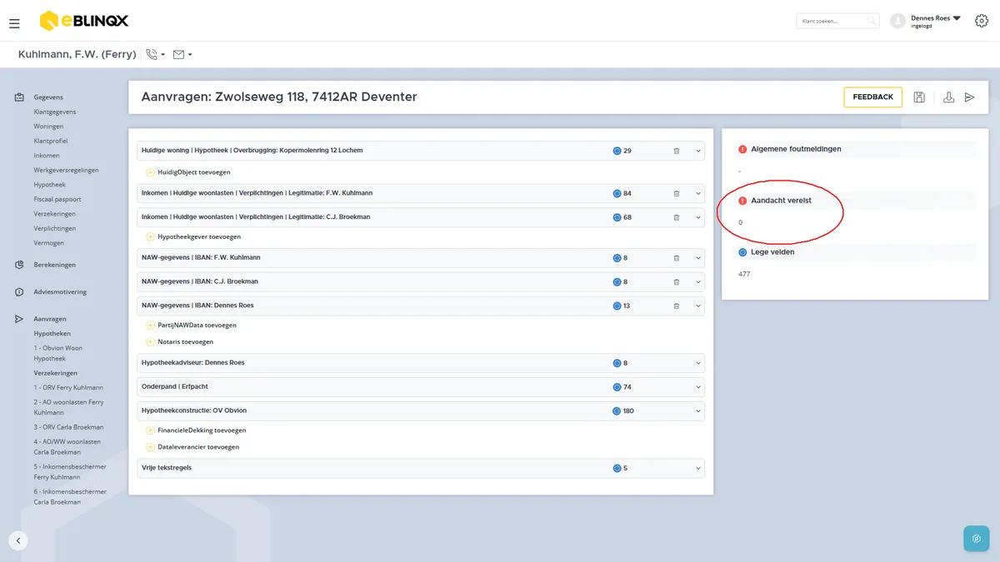
🔔 IT-26843 — Slimmere invulvelden voor soepelere HDN-aanvragen
Goed nieuws! eBlinqx Hypotheekadvies maakt het invullen van het HDN-formulier vanaf nu nóg slimmer en gebruiksvriendelijker. Wanneer een adviseur bij bijvoorbeeld notariskosten of EBV/EBB bewust het bedrag op 0,00 zet, zorgt eBlinqx Hypotheekadvies er automatisch voor dat het veld netjes wordt leeggelaten. Zo voorkomen we foutmeldingen en handmatige correcties. Voordelen: Geen foutmeldingen meer bij 0,00 in het HDN-formulier. Minder handmatig werk, minder frustratie en een snellere en soepelere verwerking van aanvragen Kortom: een kleine slimme aanpassing die veel tijd én irritatie bespaart!
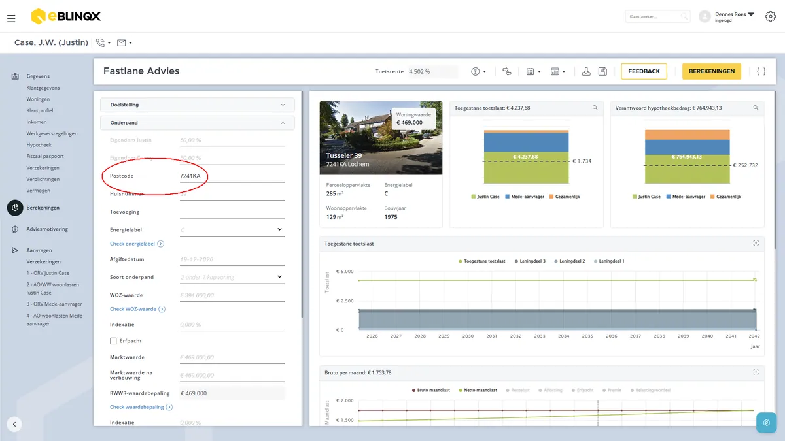
🆕 IT-26803: Automatische omzetting postcode naar hoofdletters t.b.v. HDN-validatie
Vanaf nu worden postcodes in eBlinqx Hypotheekadvies automatisch omgezet naar hoofdletters, zodat deze altijd voldoen aan de HDN-validatie-eisen. Voorheen konden gebruikers kleine letters invoeren (bijv. 5037ab), wat leidde tot foutmeldingen bij verzending naar HDN ("Dit is geen geldige postcode"). Deze fout had geen inhoudelijke impact, maar veroorzaakte onnodige vertraging en verwarring.
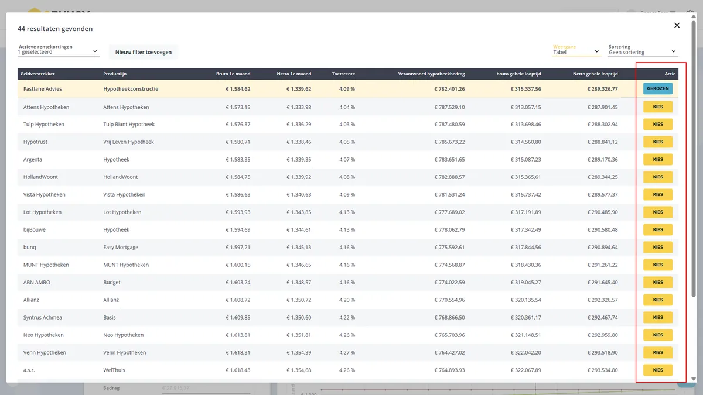
🆕 IT-26749: Selectiemogelijkheid aanbieders toegevoegd aan lijstweergave bij vergelijkingen
De lijstweergave bij het vergelijken van de geldverstrekkers is uitgebreid met de mogelijkheid om aanbieders te selecteren, net zoals dat al mogelijk was in de tabelweergave. Tot nu toe konden gebruikers in de lijstweergave geen aanbieders selecteren, wat leidde tot inconsistente functionaliteit en beperkte gebruiksvriendelijkheid. Met deze uitbreiding is de gebruikerservaring verbeterd en zijn beide weergavevormen nu functioneel gelijk.
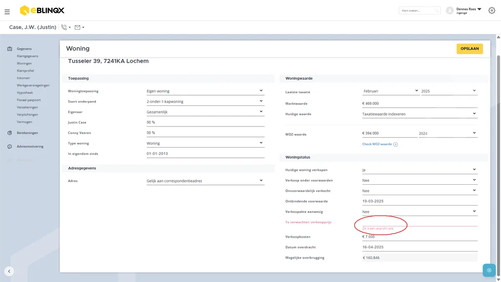
🆕 IT-26698: Verplichte invoer ‘Te verwachten verkoopprijs’ bij verkoop huidige woning
Bij het invullen van PortefeuilleSignalen is het veld ‘Te verwachten verkoopprijs’ voortaan verplicht zodra de adviseur aangeeft dat de huidige woning verkocht gaat worden (“Huidige woning verkopen?” = Ja). Zonder dit veld ontstaat er verwarring of foutieve output bij de berekening van de overbruggingshypotheek. Door deze verplichting zorgen we voor een correctere en betrouwbaardere berekening.
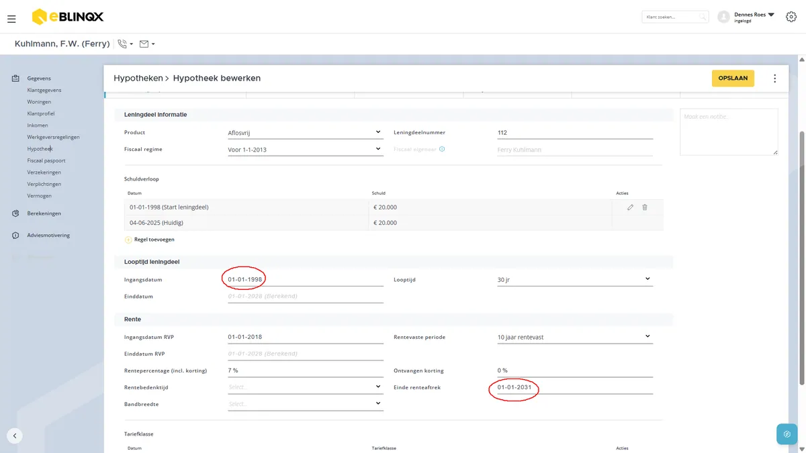
💡Juiste einddatum renteaftrek bij leningdelen < 1-1-2001
eBlinqx Hypotheekadvies rekent nu automatisch de juiste einddatum voor renteaftrek bij oude leningdelen. Heb je te maken met leningdelen die zijn gestart vóór 1 januari 2001, zoals bijvoorbeeld 1-1-1998? Dan vult eBlinqx Hypotheekadvies vanaf nu automatisch de juiste einddatum voor renteaftrek in: 1-1-2031 in plaats van 1-1-2028. Helemaal volgens de fiscale regels. Handmatig corrigeren is niet meer nodig – de juiste datum staat er gewoon direct in. Wel zo makkelijk.
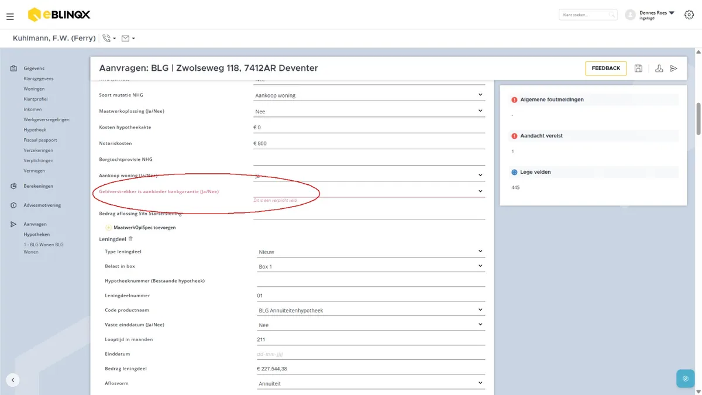
💡IT-26730: Actieve keuze voor bankgarantie in HDN-aanvraag
Vanaf nu wordt de vraag “Geldverstrekker is aanbieder bankgarantie (Ja/Nee)” in het HDN-aanvraagformulier niet langer automatisch ingevuld.Voorheen werd standaard het antwoord “Ja” ingevuld. Je kunt nu zelf bepalen of de geldverstrekker óf een andere partij de bankgarantie stelt.
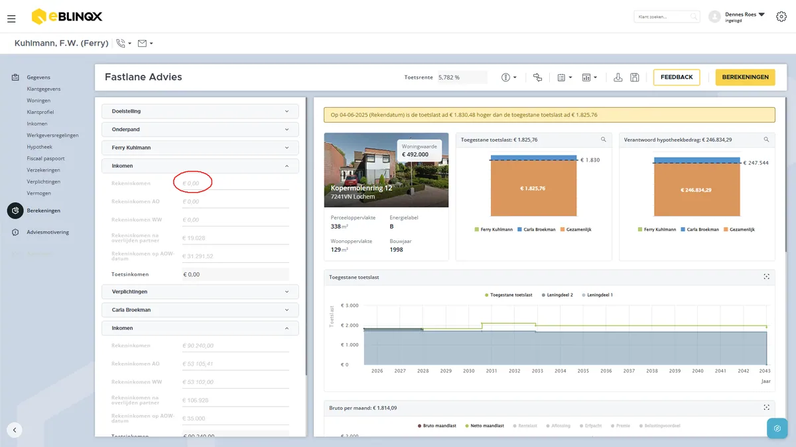
💡IT-19290: Berekening mogelijk bij aanvrager zonder inkomen
eBlinqx Hypotheekadvies ondersteunt nu ook situaties waarin de hoofdaanvrager geen inkomen heeft, maar de mede-aanvrager wel. Voorheen liep je hier vast, maar vanaf nu kun je ook in deze gevallen gewoon een berekening maken.
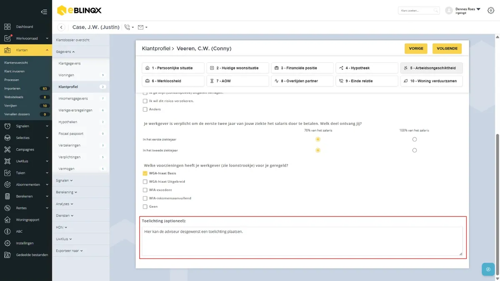
💡IT-26433: Meer ruimte voor toelichting in het klantprofiel
Vanaf nu heeft elk hoofdstuk in het klantprofiel z’n eigen toelichtingsveld. Hierin kun je – samen met je klant – extra info kwijt die niet past binnen de standaardopties. Handig om context, uitzonderingen of nuances toe te lichten. Zo wordt het klantbeeld vollediger en het advies sterker.
Let op: deze functie is alleen beschikbaar voor nieuw aangemaakte klantprofielen. Bestaande profielen krijgen deze velden niet automatisch mee.
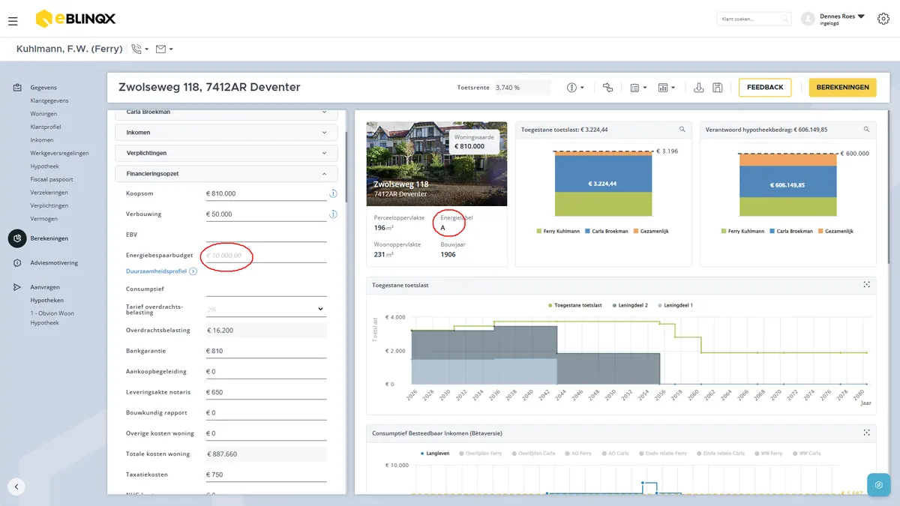
💡IT-26744: Energielabel aangepast? Budget wordt nu vanzelf meegenomen
Pas je het energielabel van de woning aan naar A+++? Dan zorgt eBlinqx Hypotheekadvies er automatisch voor dat het energiebespaarbudget van € 10.000 wordt meegenomen in de financiële opzet. Je hoeft dus niet meer handmatig te herberekenen – dat scheelt tijd én voorkomt gedoe.
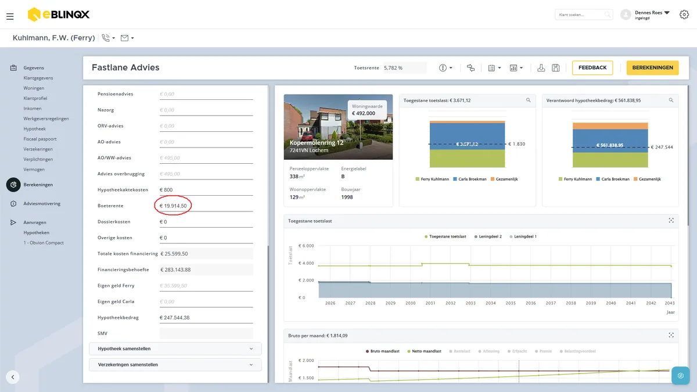
💡 IT-25218: Boeteberekening sluit nu nog beter aan op AFM-leidraad
De boeteberekening in eBlinqx Hypotheekadvies is geüpdatet en volgt volledig de richtlijnen van de Autoriteit Financiële Markten (AFM) voor vervroegd aflossen.
De AFM-leidraad stelt dat de vergoeding voor vervroegde aflossing niet hoger mag zijn dan het daadwerkelijke financiële nadeel voor de aanbieder. Dit wordt berekend aan de hand van de netto contante waarde (NCW) van de gemiste rentebetalingen. Daarbij moet de vergelijkingsrente worden vastgesteld op de aflosdatum of, indien dat niet mogelijk is, maximaal vijf werkdagen daarvoor.